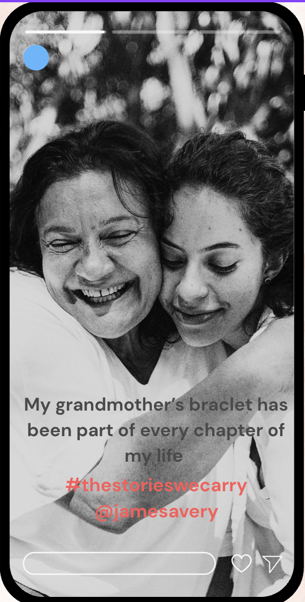

Listen for the story.
People rarely come in just to buy jewelry. They may be celebrating a milestone, choosing a gift, or honoring a relationship. I pay attention to what customers share and create space for them to explain what matters.
LUXURY RETAIL · CONSUMER PSYCHOLOGY
What I learned about luxury retail as a sales associate: building trust, understanding customer motivations, and turning personal stories into meaningful brand experiences.
ROLE
Sales Associate
ORGANIZATION
James Avery Artisan Jewelry
TIMELINE
September 2025 – Present
Skills: Consultative Selling · Client Relationships · Consumer Psychology · Visual Merchandising · Bilingual Service
01 / THE CHALLENGE
I joined a newly opened James Avery location, which meant there was no established client base or store routine. Building trust with customers one interaction at a time was essential while helping the store meet its daily sales goals.
02 / MY APPROACH
I learned that selling meaningful jewelry requires more than product knowledge. It requires understanding the person, the occasion, and the story behind the purchase.
People rarely come in just to buy jewelry. They may be celebrating a milestone, choosing a gift, or honoring a relationship. I pay attention to what customers share and create space for them to explain what matters.
My psychology background helps me consider what motivates a purchase. Rather than leading with a product, I start with the person and recommend pieces that fit their preferences and story.
I look for ways to help before a customer has to ask, whether that means offering another gift option, finding a different size, or allowing someone time to decide.
James Avery jewelry is handcrafted and made to celebrate life's moments. There are a variety of pieces that guests can choose from that represent all of life's milestones.
I maintain displays and product presentation in keeping with the brand's identity. The way a product is presented contributes to how customers experience the brand.
Speaking Spanish with customers helps me communicate with a broader range of shoppers and create a more welcoming experience.
03 / BRAND STORYTELLING CONCEPT
The challenage right now is to bring in more customers to the new store. Many people are unaware of the new location, and currently experienceong ecomonic hardship making store sales low.
The goal is to bring more customers to James Avery and purchase more items. The campagin is to highlight the emotional connection that customers already have with the brand and connecting audiences with the brand by making them feel part of the James Avery family. Feature authentic stories or stories inspired by guests that show how James Avery jewelry preserves memories, honors relationships, and becomes part of family traditions.
Social storytelling: Short-form Reels and TikToks featuring customers and the stories behind their jewelry. Families sharing how meaningful pieces connect generations. Object-Only stories: a bracelet, a charm, a worn clasp, with a line like "My grandmother's story is always with me" Community participation: Invite customers and sales associates to share their stories using #TheStoriesWeCarry. (For every peroson that posts using the hashtag and tags James Avery can get 5% off their next purchase.)

04 / RESULTS
01
Encourages guests to come to the store and purchase new pieces. We can track repeat purchases and charm add-on rates to gage the campaign impact.
02
This is a great way to get everyone talking about about James Avery and engaging with James Avery content vs posting product posts. We can track the volume of guests that used the hastag to gage the campaign impact.
03
Fosters emotional connection between the brand and the audience by making the brand a initmate part of thier lives. The campaign can help audiences feel like they're apart of the James Avery community by fostering an enviornment of belonging.
04
Heirloom and retired peices show that the stering sliver durable and can last a long time with proper care.
05
Demonstrates the James Avery mission of celebrating life through design, by showcasing in real moments.
05 / A MOMENT THAT STAYED WITH ME
A customer came in with her late mother’s bracelet, tears in her eyes. She asked if I could clean and repair it, and then help her choose a charm for her own daughter, so she could make the bracelet her own and pass it on. I cleaned and repaired the bracelet and helped her find a charm for her daughter. When she saw it, she said, “Oh, this is perfect. I think she’ll love this.” That moment showed me that the jewelry isn’t just a product. It carries relationships and memories, and my job is to honor them.
06 / WHAT THIS SHOWS ABOUT ME
I pay attention to what people need and work to create an environment where they feel comfortable sharing their preferences, goals, and personal stories. That is the foundation of thoughtful luxury service, where the relationship matters as much as the transaction.
07 / WHERE I'M HEADED
James Avery has shown me that I have a strong instinct for client relationships. I now want to build the strategic skills to match that strength: brand positioning, market analysis, and the business decisions behind a luxury brand's identity.
Through continued education in luxury brand management and opportunities in the industry, I hope to move from serving clients one-on-one to shaping the experiences and stories that bring customers to a brand in the first place.